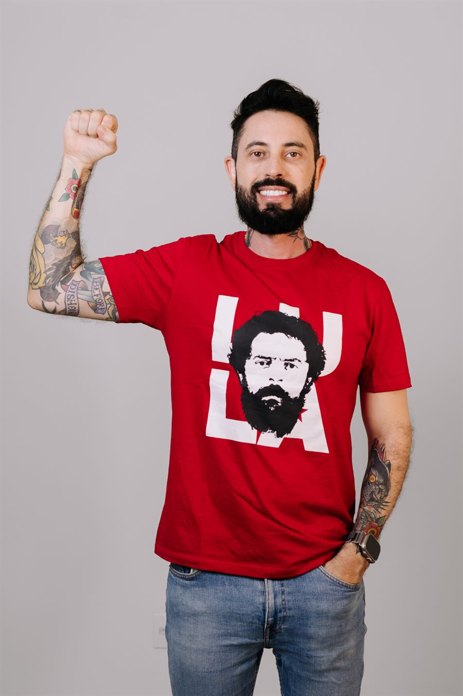
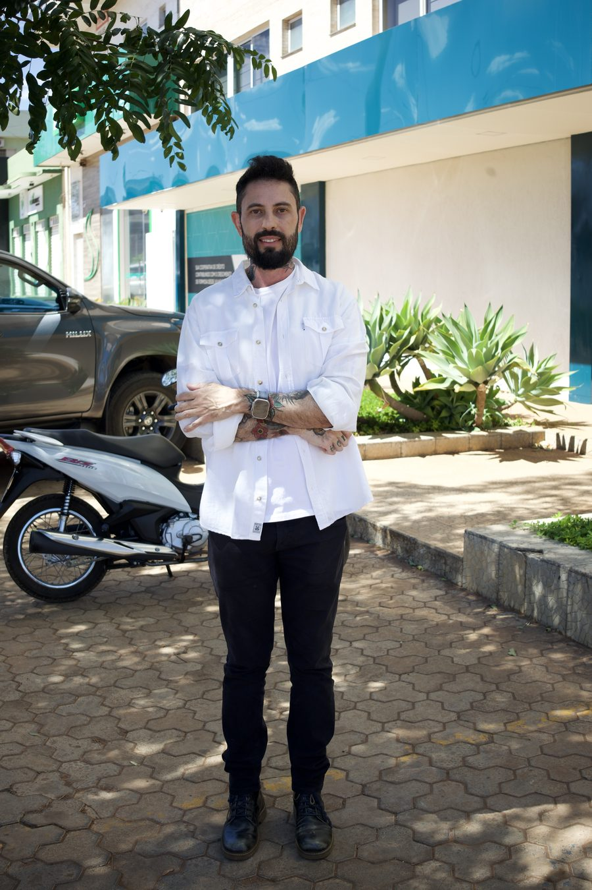
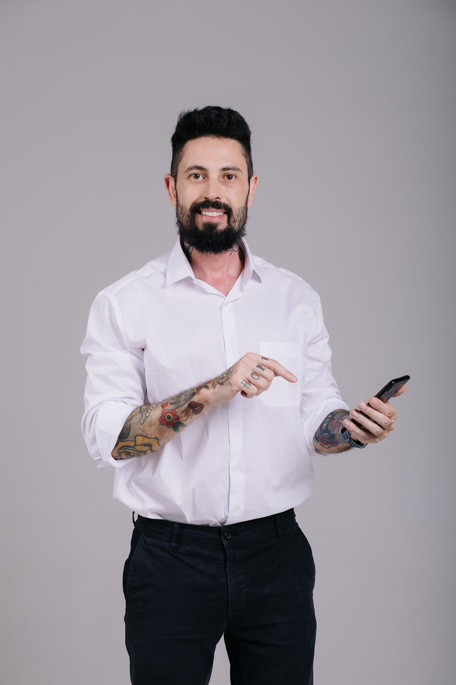

Cuidado
Proteção às pessoas, às famílias, às vítimas, às mulheres, aos jovens, às pessoas LGBTQIA+, aos agentes de segurança e aos demais grupos vulneráveis.
Tropa de Elite do Amor
O grande dia está chegando
Estamos quase lá! Guarde a data: 16 de agosto de 2026, às 8h (horário de Brasília). Venha construir com a gente um Goiás seguro para todos.
Sou delegado de carreira da Polícia Civil de Goiás, filho de uma professora da rede pública e de um imigrante palestino. São 12 anos enfrentando o crime e a certeza de que segurança de verdade se faz com cuidado, prevenção e comunidade.
Entre para a Tropa de Elite do Amor e venha construir esse Goiás com a gente.
Parte 1 / 3 O Delegado
Yasser Martins Yassine é delegado da Polícia Civil de Goiás. Filho de uma professora cearense da rede pública e de um pai palestino que chegou ao Brasil aos 18 anos como vendedor ambulante. O delegado Yasser carrega na sua história a origem humilde e a certeza de que as políticas sociais transformam vidas.
Anteriormente, foi advogado, professor e servidor da Justiça. Hoje, com mais de 986 mil pessoas acompanhando seu trabalho nas redes sociais, leva à política a mesma bandeira do dia a dia na delegacia: segurança com cuidado, prevenção e comunidade.
Filho de mãe cearense, professora de artes da rede pública, e de pai palestino, que chegou ao Brasil aos 18 anos, como vendedor ambulante.
Advogado criminalista, professor universitário e servidor do Tribunal de Justiça do DF e dos Territórios (TJDFT).
12 anos na Polícia Civil de Goiás. Chefiou a Delegacia da Mulher (DEAM), a Delegacia Especial de Investigação Criminal (GEIC), em Formosa, e a Delegacia de Polícia de Planaltina de Goiás.
Pós-graduado pelo FESMPDFT, MBA em Gestão de Segurança Pública (UnB) e mestrando em Segurança Pública (UFG).
Candidato a deputado estadual pelo PT-GO, com foco em todo o estado de Goiás.
Três pilares que sustentam uma política de segurança pública de verdade.
Proteção às pessoas, às famílias, às vítimas, às mulheres, aos jovens, às pessoas LGBTQIA+, aos agentes de segurança e aos demais grupos vulneráveis.
Inteligência, iluminação, juventude, escola, cultura, tecnologia e presença do Estado.
Moradores, lideranças, comerciantes, servidores, escolas, coletivos e Estado atuando juntos.
Educação e segurança pública no centro — com olhar de quem vive a realidade das ruas e das delegacias.
Combate ao crime organizado com inteligência, investigação que funciona e polícias bem treinadas, equipadas e valorizadas — para que ninguém viva com medo. Nem na rua. Nem em casa.
Yasser veio da periferia e chegou à delegacia porque encontrou caminhos e oportunidades. Todo jovem merece sonhar antes que o crime tente decidir seu futuro.
Filho de escola pública e de professora: defender a educação é abrir a porta de saída da desigualdade.
Bandeira sem proposta é discurso. São sete frentes — de segurança pública e direitos do trabalhador a educação, moradia, transporte, saúde e direitos humanos — que o Yasser se compromete a defender, articular e fiscalizar na Assembleia Legislativa de Goiás.
Destaque · Segurança pública
Articular nacionalmente a criação do SUIP, integrando investigações e informações entre as polícias e preservando a autonomia dos estados. Investigação que conversa entre si chega em quem manda, não só em quem obedece.
O Yasser é delegado de carreira da Polícia Civil de Goiás — segurança pública é a frente com mais compromissos do mandato.
Ver as propostas de segurança públicaO que orienta cada passo dessa caminhada.
O crime organizado é o capitalismo de fuzil. As naves, os cordões e os panos de grife estão nas mãos dos patrões. Quem segura o corre, o avião, o peão, o soldado segue morrendo na quebrada, sem nome e sem glória. Não tem distribuição de renda. Só exploração.— Delegado Yasser
Onde o Estado é mínimo, o crime organizado é máximo.— Delegado Yasser
Eu sei o valor das políticas públicas. Cresci na quebrada de Planaltina, onde a violência era rotina. Eu virei delegado. Mas podia ter virado estatística. Eu sou o exemplo prático de que a educação transforma.— Delegado Yasser
Mudar o nome do problema não resolve o problema. Chamar o faccionado de terrorista vai mudar o que na sua vida? Quantos bairros deixarão de ser dominados pelo crime organizado com essa mudança?— Delegado Yasser
Tem político que trata a segurança pública como espetáculo. Muita fumaça e barulho, mas zero resultado.— Delegado Yasser
Todo mundo quer uma polícia mais bem equipada e mais eficiente. Quem gosta do mau policial é bandido e quem apoia bandido.— Delegado Yasser
Parte 2 / 3 As Redes
Mais de 986 mil pessoas acompanham o trabalho do Delegado Yasser. Siga, compartilhe e traga mais gente para a caminhada.
E milhares de pessoas nos grupos da Tropa de Elite do Amor no Instagram, WhatsApp e TikTok.
Dados de alcance nas redes do Delegado Yasser — agosto/2026.

Escolha uma foto sua, escolha o Yasser e leve os dois no mesmo cartaz. A montagem é feita aqui mesmo, no seu aparelho: sua foto não é enviada para lugar nenhum e não fica guardada em nenhum servidor.
Vale foto da galeria ou da câmera, de qualquer tamanho. Ela entra na moldura branca do cartaz e o enquadramento fica com você.
Sua montagem aparece aqui.
Escolha uma foto no passo 1 para começar.
Arraste a foto dentro da moldura para enquadrar. Pelo teclado: dê foco na montagem e use as setas para mover (com Shift, passos maiores), + e − para aproximar e Home para voltar ao começo.
A montagem é feita pelo seu próprio navegador, com a foto que está no seu aparelho. Nenhuma imagem é enviada, salva ou compartilhada sem você mandar. Depois de baixar, siga o Delegado no Instagram, no TikTok e no Threads.
Nossa missão é transformar mobilização nas redes em presença real: ouvir a população, mapear os espaços do medo e construir uma segurança pública que faça as pessoas viverem seguras na rua e em casa.
Quando o Estado abandona, o crime ocupa. Por isso queremos polícia valorizada, investigação funcionando e comunidade protegida.
Como você pode ajudar:

O movimento se faz com gente — e também com recursos. Apoie com qualquer valor pelo financiamento coletivo oficial, com doação segura e lista pública de doadores.
♥ Apoiar o movimento apoiar.me/delegadoyasserParte 3 / 3 O Movimento
Escolha a forma de participação que combina com você. Toda ajuda conta.
Tem um lugar que você evita por medo? Rua escura, praça abandonada, ponto de ônibus inseguro. Registre no Goiás Seguro para Todos — cada relato vira investigação e projeto real.
Enviar relato no Goiás Seguro para TodosOrganize apoiadores na sua cidade, reúna pessoas em rodas de conversa e conecte lideranças, coletivos e movimentos. Convide o Yasser para ouvir a sua comunidade.
Converse com o YasserReceba em primeira mão os conteúdos para compartilhar e os avisos de caminhadas, mutirões e encontros — e ajude a mensagem a chegar mais longe.
Quero receber as novidadesConte para a gente: rua escura, praça abandonada, ponto de ônibus inseguro, escola vulnerável. Sua resposta vira projeto real.
Uma biblioteca completa — artes para redes, vídeos curtos, frases e o Manual do Voluntário, sempre atualizados. Baixe, compartilhe e leve a mensagem mais longe.
O guia completo: como funciona o movimento, o que fazer no primeiro dia e como levar a mensagem adiante.
Artes prontas para postar e encaminhar nos seus grupos e stories.
Cortes verticais prontos para reels, stories e status.
Passo a passo para organizar um encontro na sua cidade.
Conteúdos prioritários e links da semana, sempre atualizados.
Acompanhe as próximas ações do movimento.
As próximas ações serão divulgadas em breve. Cadastre-se para ser avisado em primeira mão.
Acompanhe as novidades do movimento.
As notícias do movimento serão publicadas em breve. Enquanto isso, acompanhe o dia a dia nas redes do Yasser.
Registros do Delegado Yasser nas ruas, em eventos e no encontro com quem constrói um Goiás Seguro.
Foto 1de 114
Os jingles da campanha viraram álbum. Dá o play, escuta do começo ao fim e leva a mensagem junto com a música.
As músicas também estão no Instagram e no TikTok: procure por Yasser Fun Festival na biblioteca de áudios ao criar seu reels ou vídeo e use na sua publicação.
Preencha seus dados, escolha como quer ajudar e a equipe vai direcionar você para o grupo certo. Goiás seguro começa com gente organizada.

Não perca a chance de fazer parte desse movimento. Sua participação transforma apoio em ação concreta. Vem com a gente construir esse Goiás — Delegado Yasser, 13007.